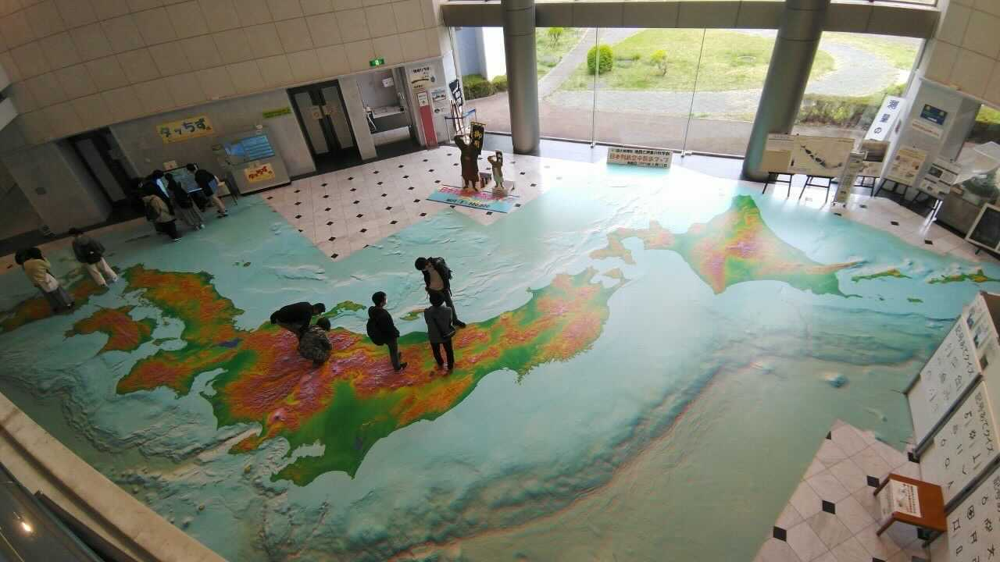

2021年4月17日に新歓企画として国土地理院(地図と測量の科学館)の見学とつくば市内ドライブに行きました！
まず国土地理院では、通常の展示に加えて企画展示として「一等三角点物語」が開催されていました。一等三角点の設置のための測量から始まった明治時代の全国測量・全国地図の作成に着目したものでした。多くの三角点を選点した館潔彦の多くのスケッチが展示されており、初公開のものもありました。過去をみることや土地の様子を見ることが出来るのはもちろん、人の流れもみることが出来たり、様々な魅力の詰まった地図の現在に至る大きな部分を学ぶことが出来ました。
次に車ごとでつくば市内のドライブに行きました！これは車ごとで行先は異なったのですが、筆者の車は洞峰公園に行きました。車or気合を出して自転車でないと行けない方面なので(筆者的には)、有意義なものだったと思います。車によっては、特徴的な建築物を車内から見学しに行ったりもしました。
半日かけて近場をゆっくり回った巡検でしたが、近くほどじっくり見て回る機会もなかったのでとても楽しかったです。
参照 https://www.gsi.go.jp/MUSEUM/SOUGO/kohokocho2021_00003.html